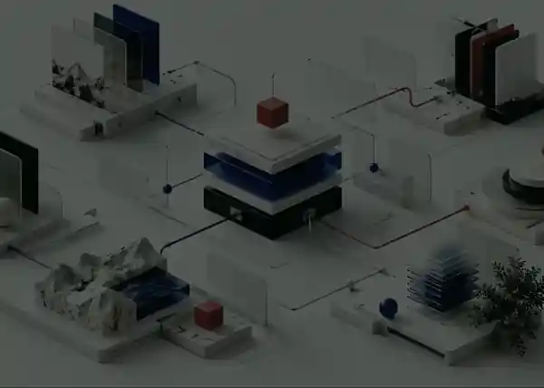
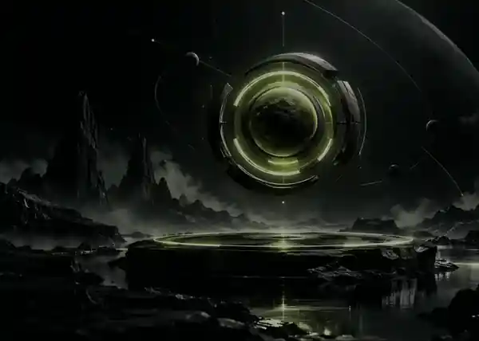

Bring the world into view.
Unify live operational, geospatial, and product signals without flattening the context that makes them useful.
Flagship intelligence platform · 2026
Transform complex signals into clear, coordinated action at planetary scale.
Product premise
NOVA brings fragmented environmental, operational, and network signals into one coherent system—so teams can understand what changed, what it affects, and what to do next.

Three capabilities
Unify live operational, geospatial, and product signals without flattening the context that makes them useful.
Model relationships across signals to reveal patterns, dependencies, and emerging risk before it becomes obvious.
Turn shared context into clear actions across teams, workflows, and intelligent systems.

System flow
A simple operating model keeps the story legible even when the underlying system is complex.
Built for scale
Use-case story
A weak pattern appears across multiple signals. Individually, none would trigger action.
NOVA connects location, timing, operational exposure, and historical context into one shared picture.
Teams receive the same context at the same moment, with the actions that matter already sequenced.
Ready for the next signal?
FAQ
A fictional enterprise intelligence platform created to demonstrate premium product storytelling, imagery, and scroll motion.
No. The product name, metrics, and scenarios are design-demo content.
Layout and states are CSS-first. GSAP and ScrollTrigger add the cinematic desktop scroll choreography as progressive enhancement.
Every section remains visible and functional; pinned and scrubbed timelines are skipped.